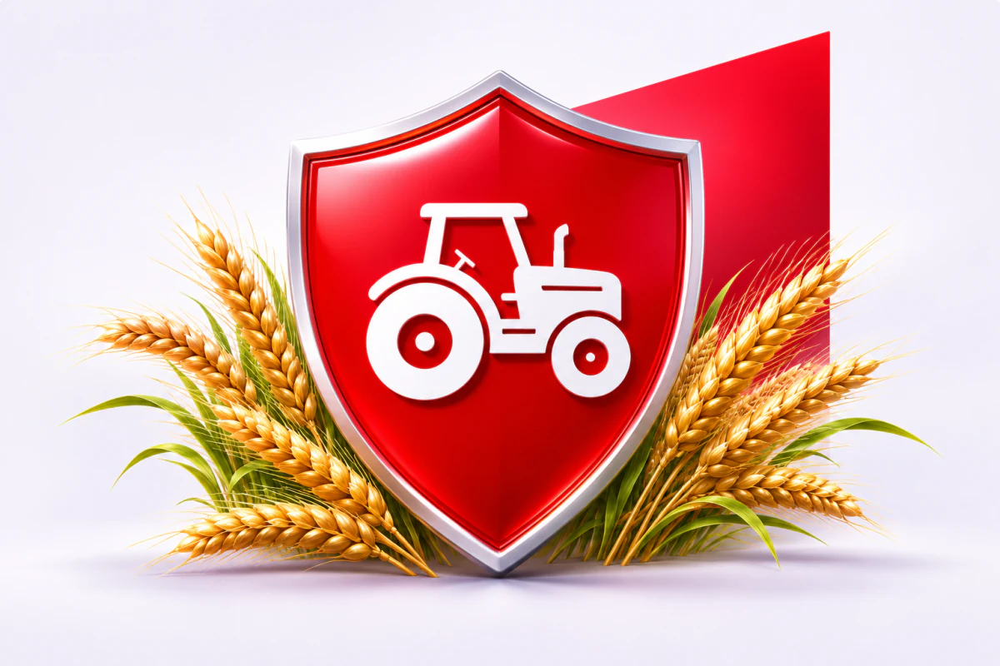

1. OC rolnika
Obowiązkowe ubezpieczenie chroni przed finansowymi konsekwencjami szkód wyrządzonych osobom trzecim w związku z posiadaniem gospodarstwa.
- Szkody osobowe podczas prac gospodarskich.
- Uszkodzenie mienia innych osób.
- Szkody wyrządzone przez zwierzęta gospodarskie.
- Szkody spowodowane przez osoby pracujące w gospodarstwie, w zakresie przewidzianym przepisami.